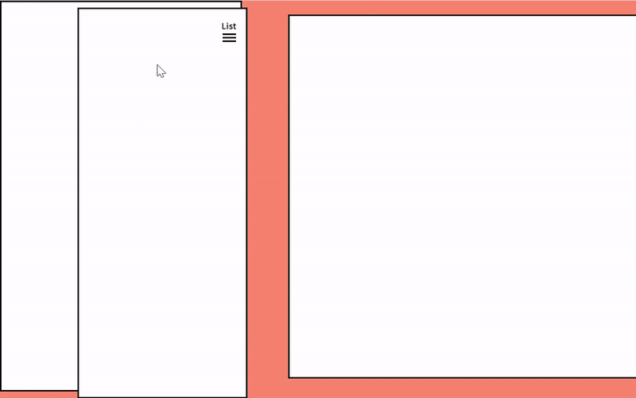
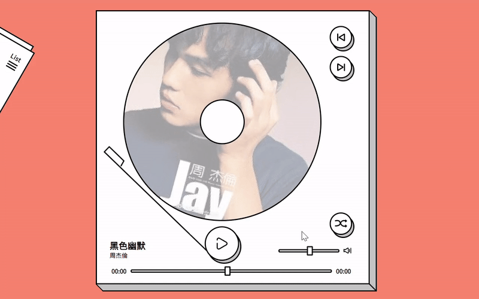
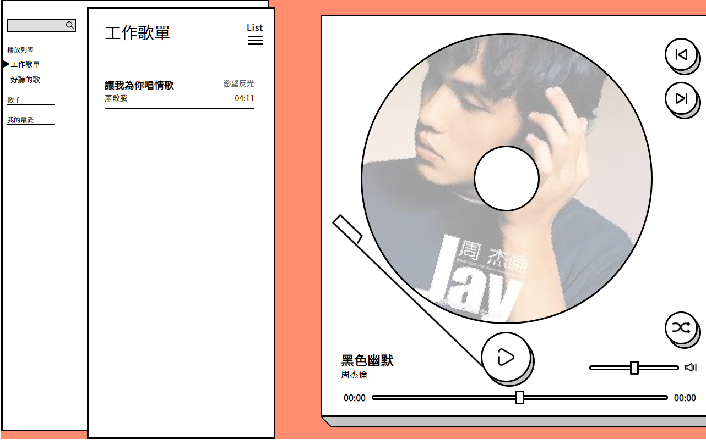

本作品更新的進度到刻完第一個版面。
短期內不會進行更新。
挑戰前兩關時都有遭遇到同樣的問題：
- 對 JavaScript 不夠熟悉，為了查詢各種語法花費非常多時間。
- 不熟悉用原生語法做 SPA ，對各種 DOM 元素開開關關感覺很冗長。
- 寫文章時發現程式可以有更好的寫法，又回頭改程式，再改示意圖、截圖，來來回回寫不完。
- 一邊惡補線上課程，作課程的作業，一邊做 F2E ，無法很專心在某個觀念。
被太多雜工拖慢進度之後感覺很疲乏，久了對於關卡也不那麼期待。
加上一直有想要趕快學 Vue.js ，幾番掙扎後決定把重心往 Vue 移動， F2E 則做到排版為止。
每篇挑戰文章會在最前面註記挑戰的進度。
作品
Lynn 的 F2E 2nd 作品列表 / 第三關： MP3 Player
設計稿
採用 Miss_Y 的設計稿。
排版
大區塊
大區塊的結構只有兩塊：
1
2
3
4
| <main class="main">
<aside class="aside"></aside>
<div class="player"></div>
</main>
|
先用絕對定位將起始位置擺好，設定 transition-duration ，再用 toggleClass 的方式做出隱藏側欄的效果：
1
2
3
4
5
6
7
8
9
10
11
12
13
14
15
16
17
18
19
|
.aside {
position: absolute;
transition: 1s all;
}
.player {
position: absolute;
top: 28px;
left: 580px;
transition: 1s all;
}
.main.hide-aside .aside {
transform: translateX(-560px) translateY(-50px) rotate(30deg);
}
.main.hide-aside .player {
left: 256px;
}
|
切換 .hide-aside 的方式用 jQuery 純粹是因為趕時間 XD
1
2
3
| $('.aside-switch').click(function () {
$('.main').toggleClass('hide-aside');
});
|

播放器
播放器裡的區塊位置比較多變，所以用絕對定位處理。
按鈕效果
其中比較特別的是要用偽元素做出立體的效果，微調位置就很重要。
以播放鍵為例，先用絕對位置的差異做出立體感，再用 margin 做出位移。
1
2
3
4
5
6
7
8
9
10
11
12
13
14
15
16
17
18
19
20
21
22
| .player .play-button {
position: absolute;
top: 574px;
right: 346px;
}
.player .play-button:before {
content: "";
width: 100%;
height: 100%;
position: absolute;
top: 5px;
left: 3px;
z-index: -1;
}
.player .play-button:active {
margin-right: -7px;
margin-top: 9px;
}
.player .play-button:active::before {
left: -3px;
top: -3px;
}
|
其中特別要注意的是，偽元素如果要在父元素底下，父元素不能設 z-index ，偽元素則要設為負值。
時間軸與音量軸都需要自訂 input range 的樣式，依據想要相容的瀏覽器，加上「 appearance: none 」，再改為自己想要的樣式即可。
1
2
3
4
5
6
7
8
9
10
11
12
13
14
15
16
17
| .player input[type="range"] {
-webkit-appearance: none;
outline: none;
background: none;
border: #000 3px solid;
border-radius: 76px;
}
.player input[type="range"]::-webkit-slider-thumb {
-webkit-appearance: none;
position: relative;
width: 16px;
height: 25px;
border: #000 3px solid;
border-radius: 2px;
background-color: #fff;
}
|
播放效果
依據設計稿，播放時唱針會移到 CD 圖樣上方，旁邊會出現晃動的圖樣，播放鍵也會變成暫停鍵。
可以在上層元素讓各元素很容易知道現在是播放中，以改變樣式。
因此可以讓播放鍵切換 playing 和 pause 類別：
1
2
3
4
| $('.player .play-button').click(function () {
$('.player').toggleClass('pause');
$('.player').toggleClass('playing');
});
|
而樣式就能隨之作出改變：
1
2
3
4
5
6
7
8
9
10
11
12
13
14
15
16
17
18
19
20
21
22
23
24
|
.player.pause {
background-image: none;
}
.player.pause .play-button {
background-image: url(../img/play.png);
}
.player.pause .needle {
transform: rotate(-15deg);
}
.player.playing .cd {
-webkit-animation: playing 5s infinite linear;
}
@-webkit-keyframes playing {
from {
-webkit-transform: rotate(0deg);
}
to {
-webkit-transform: rotate(360deg);
}
}
|
其實應該可以將 .playing 和 .pause 寫成一個類別就好，只是一開始沒有考慮好以播放還是暫停狀態為主。

側欄
側欄的排版比較沒有要注意的地方，其中一個小細節是，如果 <li> 需要邊線重疊，可以用 margin-top: -1px 的方式。

小結
由於時間因素，這關就先做到這裡。
這次的收穫是練習到 CSS3 Animation 和 Transition ，及利用偽元素做出立體的效果。